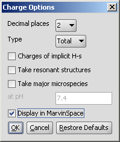
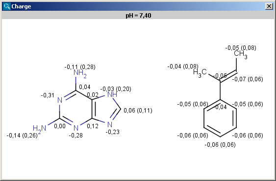
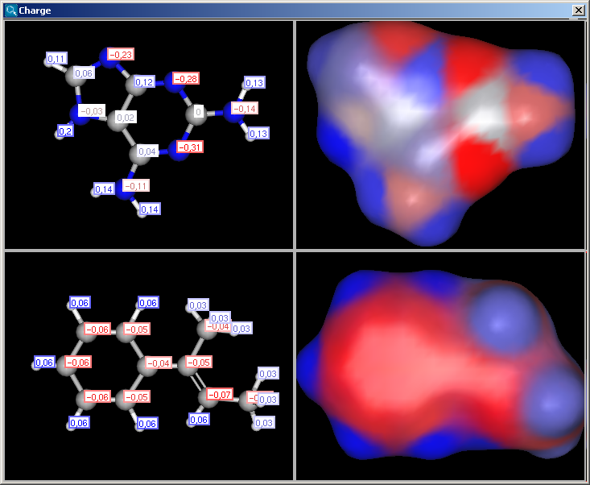
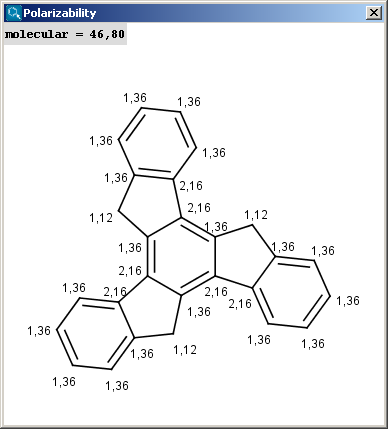
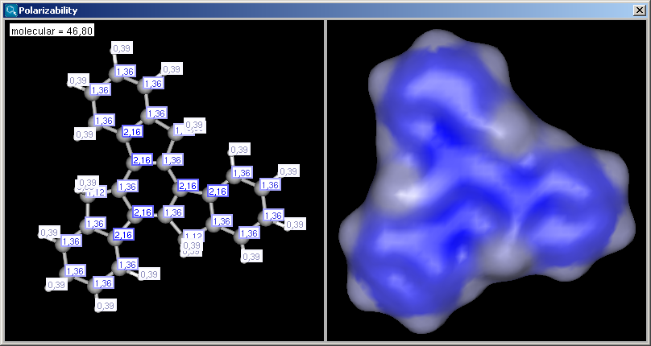

The partial charge distribution determines many physico-chemical properties of a molecule, such as ionization constants, reactivity and pharmacophore pattern. Use Charge plugin to compute the partial charge value of each atom. Total charge is calculated from sigma and pi charge components, and any of these three charge values can be displayed. Learn more about how the plugin calculates the partial charge.
In the Charge Options panel you can set the following:
|  |
The results are shown in a new window, if more molecules present on the sketching canvas (in MarvinSketch) then all molecules appear in one single field in 2D:
|  |
Charge is expressed in atomic unit [e].The numbers in brackets refer to the charge sums of implicit hydrogen atoms, and displayed only if the "Increment of Hs" option is switched on in the Charge Options panel.
If the Display in MarvinSpace checkbox was checked, the results appear in seperate fields, but operations (zooming, rotating etc.) are linked:
|  |
The electric field generated by partial charges of a molecule spread through intermolecular cavities and the solvent. The induced partial charge (induced dipole) has a tendency to diminish the external electric field. This phenomenon is called polarizability. The more stable the ionized site is the more its vicinity is polarizable. This is why atomic polarizability is an important factor in the determination of pKa and why it is considered in our pKa calculation plugin. Atomic polarizability is altered by partial charges of atoms. We use two methods to calculate polarizability: one of the calculations is based on Miller's and Savchik's atomic parameters, while the other method is based on Thole's parameters.
In the Polarizability Options panel you can set the following:
|
The result appears in a new window, displaying on each atom its polarizability value (dimension: Å3) (2D view and 3D view):
|  |  |
The contents of the text field can be copied to the clipboard by Ctrl+C, the structure field offers a context menu from MarvinView.
Partial charge distribution of the molecule is governed by the
orbital electronegativity of the atoms contained in the molecule.
Learn more about how the plugin calculates orbital electronegativity.
In the Orbital Electronegativity Options panel you can set the following:
 |
The result appears in a new window, displaying on each atom (except of hydrogens) its EN value:
 |